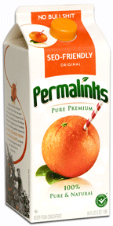
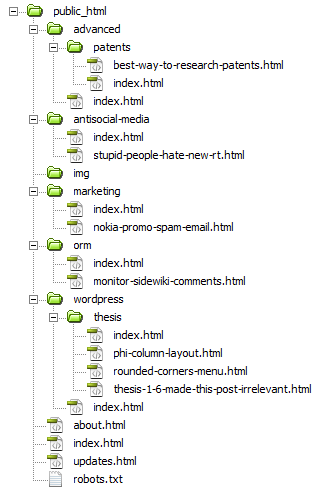
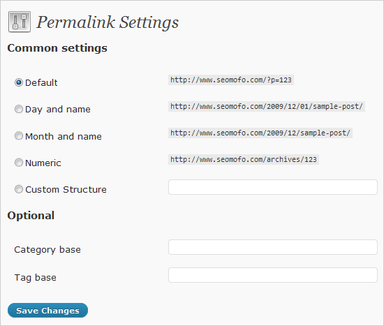
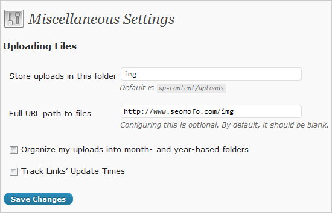

 After installing WordPress, one of the first things I needed to configure was my permalink structure. I read several articles on how to do this, but none of them had the information I was looking for. In fact, I was pretty shocked at how difficult it was for me to accomplish the permalinks used throughout this site. In this article, I will show you exactly how I achieved natural, SEO-friendly permalinks.
What does a natural SEO-friendly URL look like?
When I say natural URL, I’m talking about a URL that looks like it belongs to a static HTML web page. In other words, I want my URLs to look like they would if I wasn’t using WordPress at all.
Here is the static HTML website I’m trying to represent:

Why are natural permalinks better?
Because Matt Cutts says so. Watch this Matt Cutts video where he answers a question about file name extensions. If you don’t want to watch it…I’ll summarize it for you: Don’t strip your URLs of their file extensions. If it’s an HTML page, let it end with .html.
Okay, here’s how I achieved natural URLs:
To-Do list for achieving natural URLs:
- Add .html to the end of blog posts
- Add .html to the end of WordPress pages
- Remove category base (/category/)
- Add a trailing slash to the end of category archive pages
- Change the default location where Media is uploaded to /img/ instead of /wp-content/uploads/
Step 1: Add .html to the end of blog posts
The first step toward optimizing your permalinks is to change the default URL structure (http://www.seomofo.com/?p=123) to a custom URL structure. In order to do this, go to the Permalink Settings menu (Settings → Permalinks):

In my opinion (and keep in mind…I’m really, really smart), the ONLY custom URL structure that makes sense is this:
[ BTW...this isn't a picture. You can copy this text. ↑ ]
Step 2: Add .html to the end of WordPress pages
Install this plugin, which adds .html to WordPress pages.
Step 3: Remove category base
Install this plugin, which removes the category base from WordPress URLs.
Step 4: Add a trailing slash to the end of category archive pages
Install this plugin, which adds a trailing slash to the end of category URLs.
This plugin requires a simple modification. This plugin will add a trailing slash to category pages AND regular WordPress pages. We only want it to apply to category pages, otherwise we will end up with page URLs like this:
http://www.seomofo.com/about.html/
To prevent the plugin from adding a trailing slash to our WordPress pages, open the plugin in your editor and locate this code:
function ppm_fixe_trailingslash($url, $type)
{
if ('single' === $type)
return $url;
return trailingslashit($url);
}
Replace it with this modified code:
function ppm_fixe_trailingslash($url, $type)
{
if ('single' === $type)
return $url;
if ('page' === $type)
return $url;
return trailingslashit($url);
}
If you have any other plugins that use your permalinks (e.g. the Google XML Sitemaps plugin), they will need to be initiated AFTER your permalinks have been modified by the plugins mentioned above. You can do this by editing the main plugin file and changing the name (the part after “Plugin Name:” that’s usually on line 2 or 3 of the code) to something higher in the alphabetical order. For example, I saved a second copy of the “Permalink Trailing Slash Fixer” plugin and named it “A Permalink Trailing Slash Fixer.” It now appears in my WP admin dashboard BEFORE the Google XML Sitemap Generator plugin, and therefore…my Sitemap URLs are the modified versions. (Tip: to make sure you’re still notified when the plugin needs to be updated, keep a deactivated copy of the original file–the one with the original name–with your other plugins.)
Step 5: Change the Media folder to /img/
This step is optional. Personally, I think storing all your images in a folder like /wp-content/uploads/ is kinda lame. I’d much prefer a traditional folder name like /img/. In order to make this happen, go to your Miscellaneous Settings menu (Settings → Miscellaneous), and modify the defaults to something like this:

If you’ve followed these steps exactly, you should now have a URL structure that gives no indication that you’re using WordPress. They should be clean, natural, and SEO-friendly.
Now before you go…do me a favor and click every single one of these widgets: